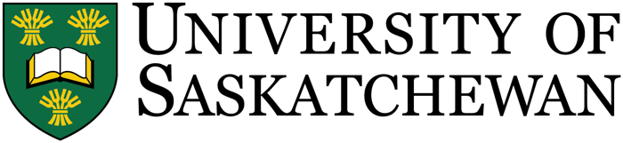

About me
As an epidemiologist at the Ministry of Health, Government of Saskatchewan, I work on childhood immunization surveillance. Since 2024, I have been measuring vaccine coverage, reporting to the Public Health Agency of Canada and turning data into briefing notes that support decisions.
I have more than six years of experience managing and analyzing large-scale administrative health data. I hold an MSc in Community and Population Health Science from the University of Saskatchewan, and I have published 38 peer-reviewed articles, 25 of them as lead author.
Education
From Bangladesh to Canada: my journey from nutrition science to epidemiology.

MSc, Community and Population Health Science
MS, Nutrition and Food Science
BSc (Hons), Nutrition and Food Science
Work
Click a tile to see my role there.
Skills
What I bring to a data or research project.
Programming and data management
Analytical methods
Health data I have worked with
Communication
Software
The tools I use in my everyday work.
Scholarships and awards
Total CA$40,500- Dean's Scholarship2021 · University of Saskatchewan · MSc program CA$36,000
- Best research poster award2023 · Graduate Research Conference, Graduate Students' Association, University of Saskatchewan CA$500
- Travel award2023 · College of Medicine, University of Saskatchewan · Canadian Society for Epidemiology and Biostatistics Conference, Halifax CA$1,500
- Travel award2022 · College of Medicine, University of Saskatchewan · Canadian Conference on Global Health, Toronto CA$2,000
- Travel award2022 · Bangladesh-Sweden Trust Fund · travel to Canada for graduate study ≈CA$500
Research grants
Total CA$4,150- Young Researchers Fellowship grant2021 · Share-Net Bangladesh Project: Perceptions on the effect of climate change on child marriage in Bhola district: a qualitative exploration based on the social ecological model ≈CA$2,500
- Young Researchers Fellowship grant2019 · WaterAid Bangladesh Project: Availability and quality of WASH infrastructure in community clinics and associated factors: a cross-sectional mixed-method study in rural coastal Bangladesh ≈CA$1,000
- National Science and Technology Fellowship2020 · Ministry of Science and Technology, Bangladesh Purpose: To support MS thesis research at Patuakhali Science and Technology University ≈CA$650
≈ Canadian-dollar equivalent of an amount paid in another currency.